Food Security in Jordan | الأمن الغذائي في الأردن
Ensuring sustainable agriculture, modern irrigation, and resilient food systems across Jordan.
Jordan Agriculture Statistics
Comprehensive data on Jordan's agricultural landscape, production, and economic impact.
Water Scarcity Challenge
Jordan is among the world's most water-scarce countries, making efficient irrigation and water management critical for food security.
- Limited renewable water resources
- Growing population pressure
- Climate change impacts
- Regional water conflicts
Irrigation Systems in Jordan
Advanced water management techniques essential for agriculture in one of the world's most water-scarce countries.
Drip Irrigation
95% EfficientMost efficient system used extensively in Jordan Valley. Water is delivered directly to plant roots through emitters.
- 90-95% water efficiency
- Reduced evaporation losses
- Precise nutrient delivery
- Suitable for all terrains
Sprinkler Irrigation
75% EfficientUsed for field crops and larger agricultural areas, simulating natural rainfall patterns.
- Good for large areas
- Uniform water distribution
- Can apply fertilizers
- Moderate investment cost
Surface Irrigation
60% EfficientTraditional method still used in some areas, particularly for flood-tolerant crops.
- Low initial investment
- Simple operation
- Good for rice cultivation
- Traditional knowledge
Jordan Valley Irrigation Network
Water Conservation Innovations
Greywater Reuse
Treated wastewater used for irrigation, reducing freshwater demand by up to 30%.
Mulching Systems
Plastic and organic mulches reduce evaporation and maintain soil moisture.
Smart Irrigation
IoT sensors and automated systems optimize water application timing and quantity.
Protected Agriculture
Greenhouses and tunnels reduce water needs while extending growing seasons.
Crops in Jordan
From traditional staples to modern greenhouse production - Jordan's diverse agricultural output.
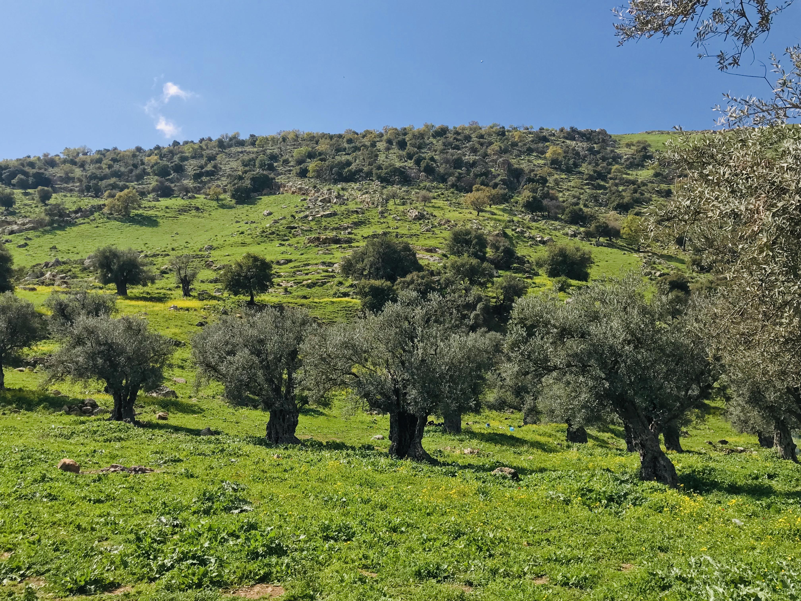
Olives
Jordan Valley, Ajloun, Jerash, Irbid
Jordan's most important crop, with varieties including Nabali, Rasii, and Improved Nabali. Main harvest season is October-December.

Wheat
Mafraq, Karak, Northern Plains
Mainly rainfed cultivation with varieties adapted to semi-arid conditions. Jordan imports 95% of wheat consumption needs.
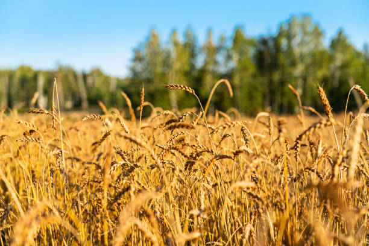
Barley
Eastern Desert, Steppe Regions
Drought-tolerant crop used primarily for animal feed. Well-adapted to Jordan's arid conditions.
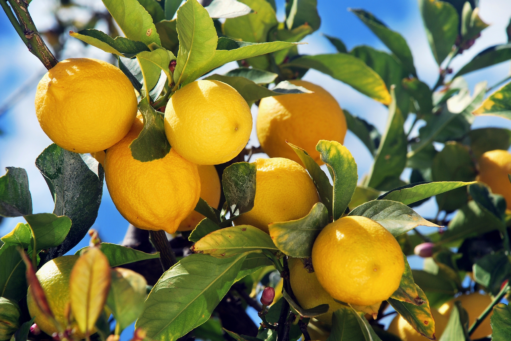
Citrus Fruits
Jordan Valley, Ghor
Oranges, lemons, and grapefruits grown in the warm Jordan Valley climate with intensive irrigation.
Heritage & Endangered Varieties
Traditional crop varieties that have been cultivated in Jordan for centuries, now at risk of disappearing due to modern farming practices.
Ancient Wheat Varieties
Endangered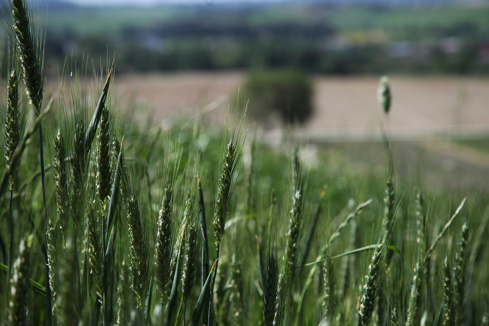
Traditional emmer and einkorn wheat varieties once common in northern Jordan. These hardy grains are drought-resistant and nutritionally superior.
Heirloom Vegetables
Rare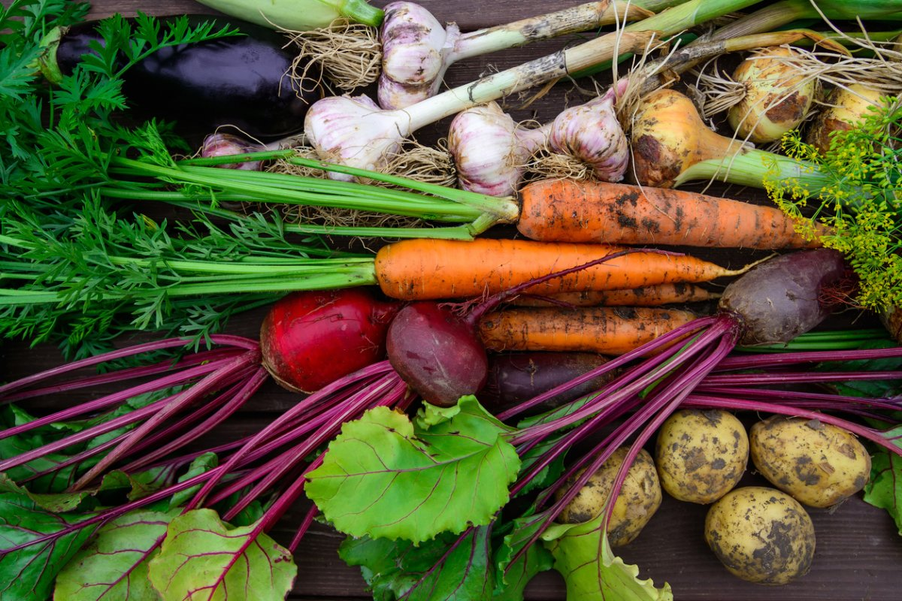
Traditional varieties of eggplant, peppers, and squash with unique flavors and adaptation to local conditions.
Wild Crop Relatives
Protected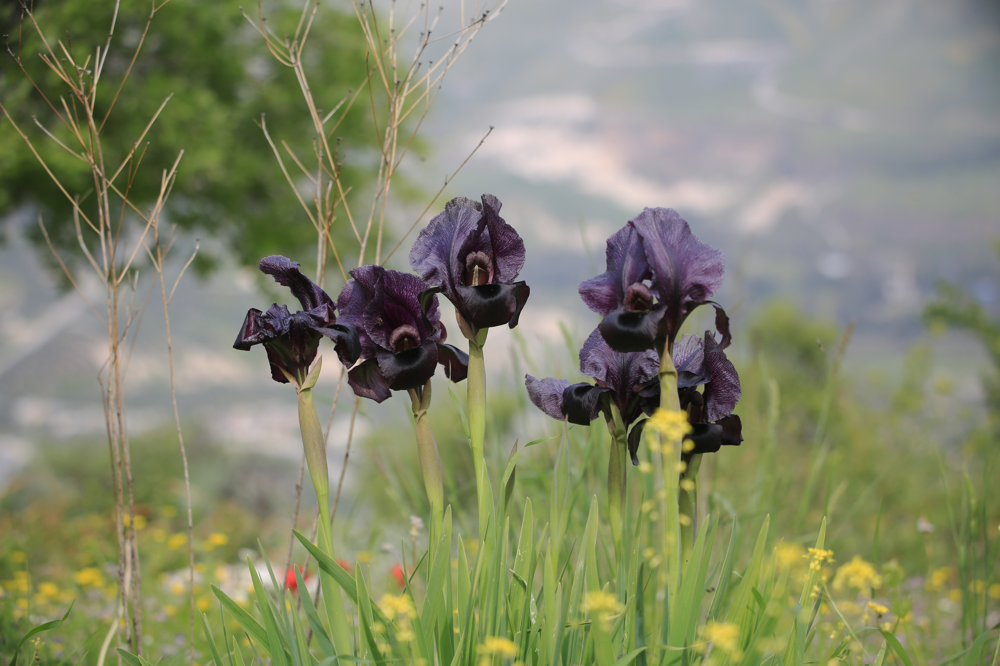
Wild ancestors of cultivated crops found in Jordan's nature reserves, crucial for genetic diversity and breeding programs.
Protected Agriculture Production
Modern greenhouse facilities enabling year-round production of high-value crops with efficient water and nutrient use.
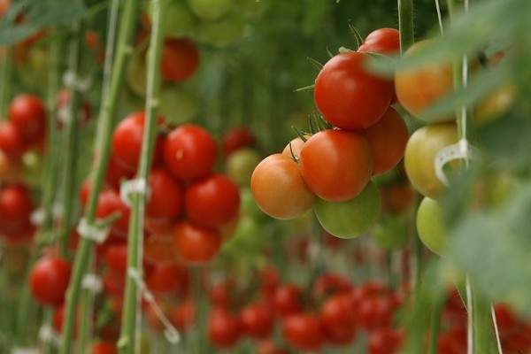
Tomatoes
Year-round production with hydroponic systems, producing 450 tons/hectare annually.
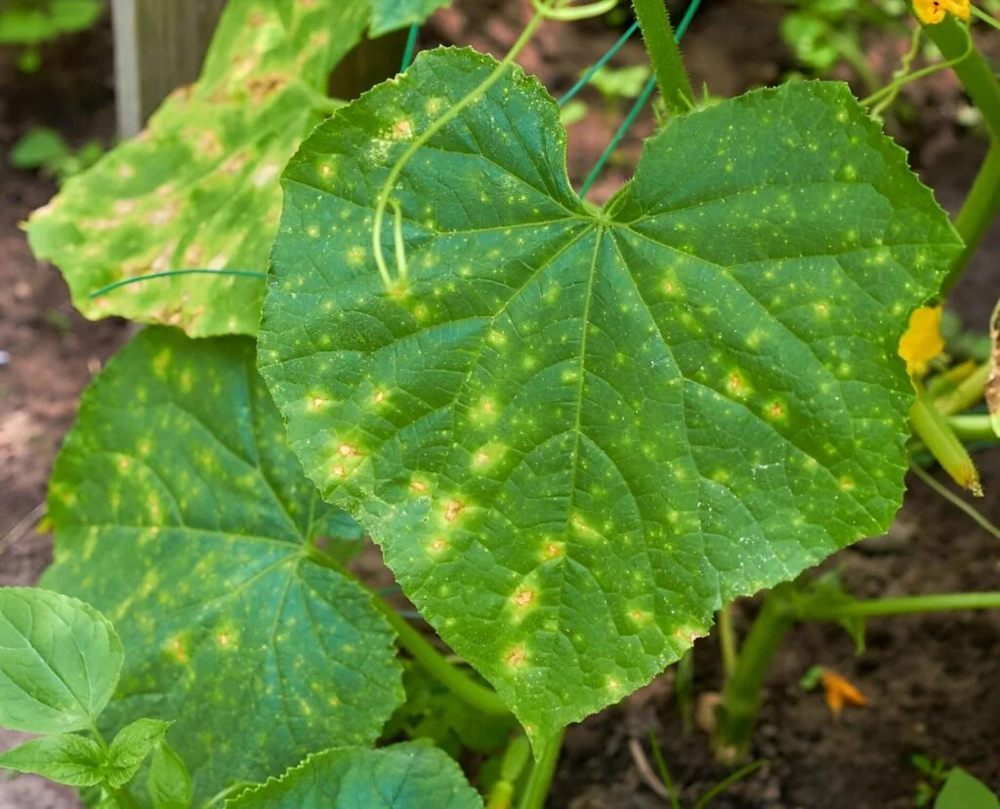
Cucumbers
High-quality export varieties grown in climate-controlled environments.
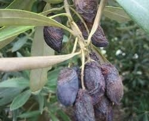
Sweet Peppers
Colorful bell peppers for domestic and export markets, grown with precision agriculture.
Native Plants of Jordan
From the national flower to medicinal herbs - Jordan's rich botanical heritage and conservation efforts.
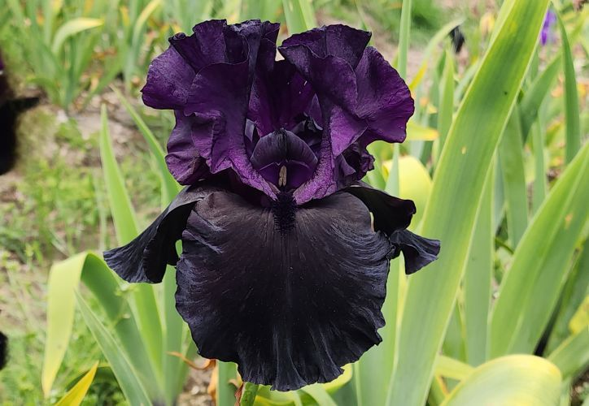
Black Iris
Iris nigricans
Jordan's national flower, the Black Iris blooms in spring across the country's highlands. This resilient flower symbolizes Jordan's natural beauty and has adapted to the country's arid climate. Found primarily in the northern and central highlands, it's protected by law and celebrated in Jordanian culture.
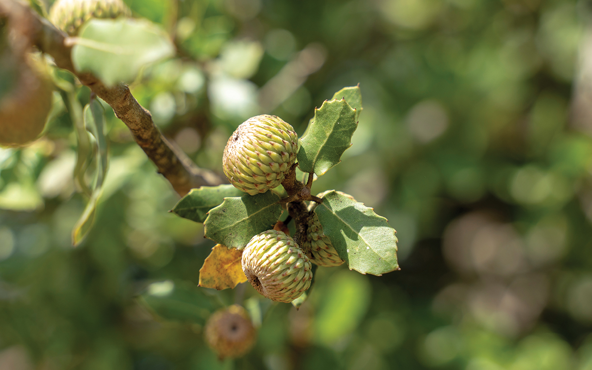
Palestine Oak
Quercus calliprinosEvergreen oak tree forming the backbone of Jordan's Mediterranean forests. Highly drought-resistant and culturally significant.
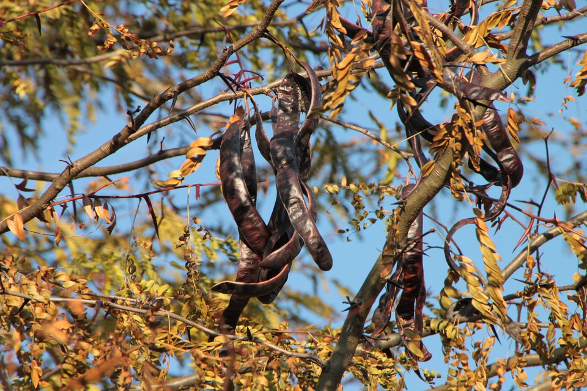
Carob Tree
Ceratonia siliquaAncient tree producing nutritious pods, historically used as currency. Extremely drought-tolerant and long-lived.
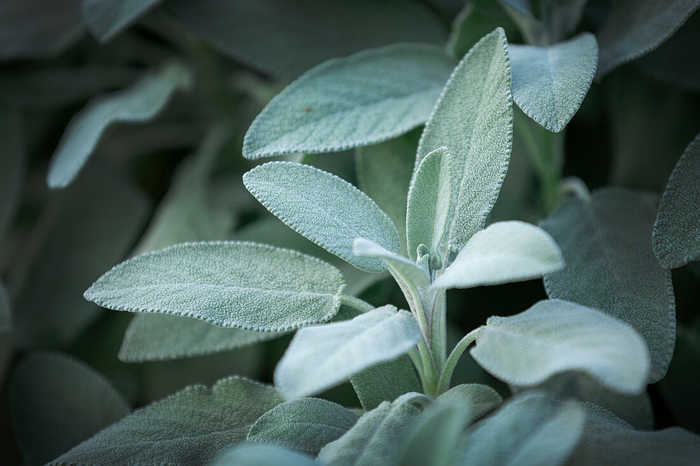
Wild Sage
Salvia fruticosaAromatic shrub common in Jordan's hills and valleys. Essential oil used in traditional medicine and cuisine.
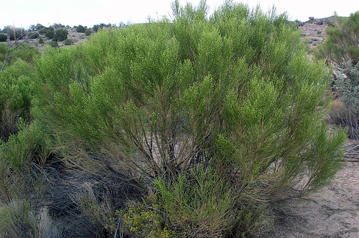
Desert Broom
Retama raetamHardy desert shrub with white flowers. Excellent for soil stabilization and desert landscaping.
Traditional Medicinal Plants
Jordan's rich tradition of herbal medicine relies on native plants that have been used for centuries to treat various ailments.
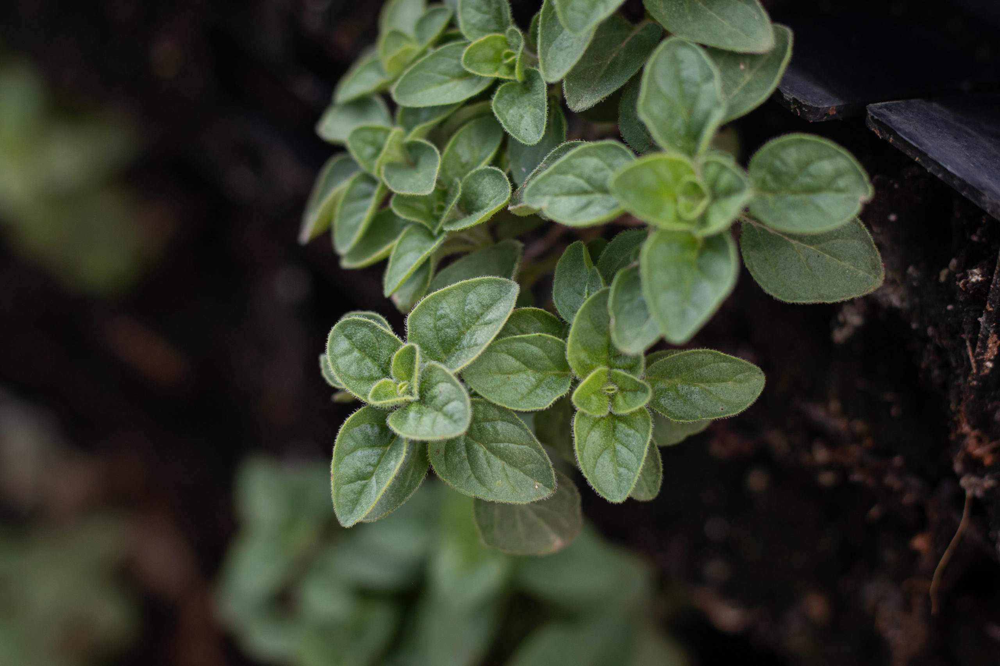
Za'atar
Origanum syriacum
Medicinal Uses:
- Respiratory ailments
- Digestive problems
- Antimicrobial properties
- Antioxidant effects
Traditionally prepared as tea or mixed with olive oil. Rich in thymol and carvacrol compounds.
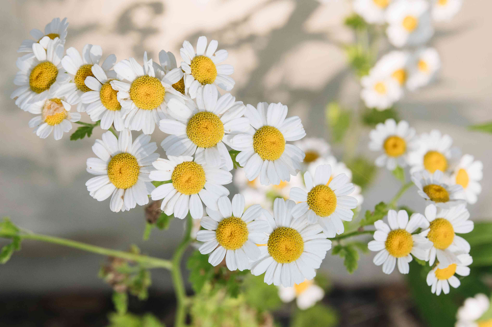
Chamomile
Matricaria chamomilla
Medicinal Uses:
- Calming and sedative
- Anti-inflammatory
- Skin conditions
- Stomach upset
Flowers used to make soothing tea. Contains apigenin and other bioactive compounds.
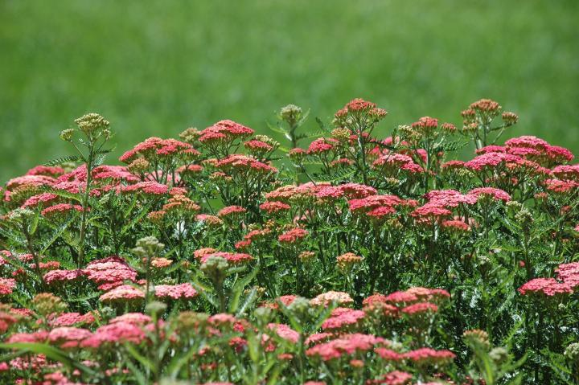
Desert Yarrow
Achillea fragrantissima
Medicinal Uses:
- Wound healing
- Fever reduction
- Pain relief
- Menstrual disorders
Leaves and flowers used in poultices and teas. Contains achilleine and essential oils.
Plants at Risk
Several native plant species face extinction due to habitat loss, climate change, and human activities. Conservation efforts are crucial for preserving Jordan's botanical heritage.
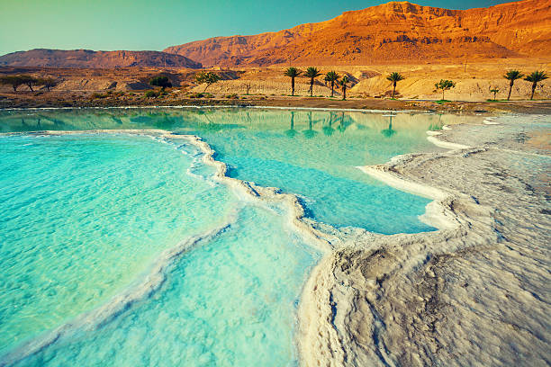
Dead Sea Endemic Species
Unique halophytic plants adapted to extreme salinity levels. Threatened by water level changes and development.
Conservation Actions:
- Seed collection programs
- Habitat protection
- Research programs
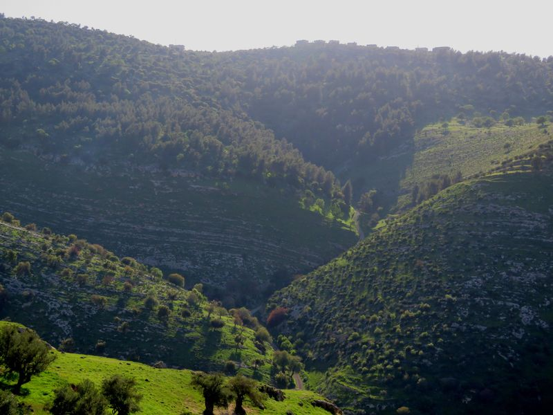
Mountain Forest Remnants
Relict forest species from cooler, wetter periods. Threatened by climate change and land use changes.
Conservation Actions:
- Protected area designation
- Reforestation efforts
- Community involvement

Overharvested Medicinal Plants
Traditional medicinal plants facing pressure from commercial collection and habitat degradation.
Conservation Actions:
- Sustainable harvesting guidelines
- Cultivation programs
- Education campaigns
Conservation Initiatives
Royal Botanic Garden
Leading conservation efforts with seed banks, research programs, and public education.
Nature Reserves
Dana, Ajloun, and other reserves protect critical habitats and endangered species.
Research Institutions
Universities and ICARDA conducting vital research on plant conservation and breeding.
Community Programs
Local communities engaged in conservation through education and sustainable practices.
Vertical Farming in Jordan
Innovative agricultural technology addressing water scarcity and land limitations through controlled environment agriculture.
95% Water Savings
Recirculating hydroponic systems use 95% less water than traditional farming methods.
Vertical Space Utilization
Produces 10-20 times more yield per square meter compared to conventional agriculture.
Year-Round Production
Climate-controlled environments enable continuous harvests regardless of weather.
Pesticide-Free Growing
Controlled environments eliminate the need for harmful pesticides and herbicides.
Multi-Level Growing System
Vertical Farming Projects in Jordan
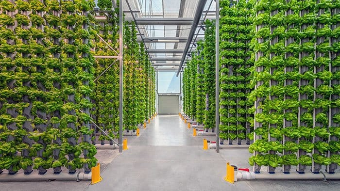
Amman Urban Vertical Farms
Several startups in Amman are pioneering vertical farming with leafy greens and herbs. These facilities supply local restaurants and supermarkets with fresh, pesticide-free produce.
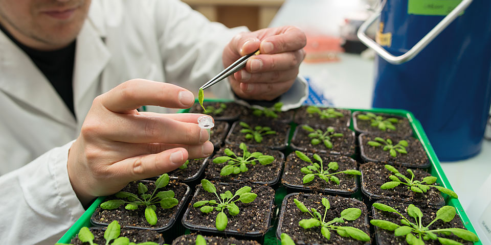
University Research Projects
Jordan University of Science and Technology, University of Jordan, and other institutions are conducting research on optimizing vertical farming for Middle Eastern conditions.
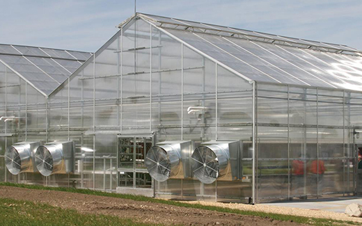
Greenhouse Technology Upgrades
Existing greenhouse operations in Jordan Valley are incorporating vertical growing systems, automated irrigation, and climate control to maximize productivity.
Investment & Growth
Future Potential
Urban Integration
Vertical farms integrated into residential and commercial buildings in Amman and other cities.
Solar-Powered Systems
Combining vertical farming with Jordan's abundant solar energy for sustainable production.
Smart Farming Networks
Connected farms sharing data and optimizing production through AI and machine learning.
Export Markets
High-quality produce for regional export, leveraging Jordan's strategic location.
Traditional vs. Vertical Farming Comparison
Plant Diseases in Jordan
Comprehensive guide to major plant diseases, their economic impact, and integrated management strategies.
Economic Impact of Plant Diseases
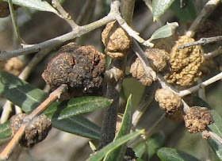
Olive Fruit Fly
Bactrocera oleae
Symptoms:
- Small puncture holes in fruit
- Larval tunnels in olive flesh
- Premature fruit drop
- Reduced oil quality
Economic Impact:
Can cause 30-80% yield losses in untreated orchards. Major threat to Jordan's olive industry.
Management:
Olive Peacock Spot
Spilocaea oleagina
Symptoms:
- Circular brown spots on leaves
- Yellow halos around spots
- Premature defoliation
- Reduced photosynthesis
Favorable Conditions:
High humidity, moderate temperatures (15-25°C), and prolonged leaf wetness.
Management:
Olive Anthracnose
Colletotrichum spp.
Symptoms:
- Dark, sunken lesions on fruit
- Mummified fruit on trees
- Twig and branch dieback
- Cankers on branches
Disease Spread:
Spreads through rain splash and infected plant debris. More severe in wet seasons.
Management:
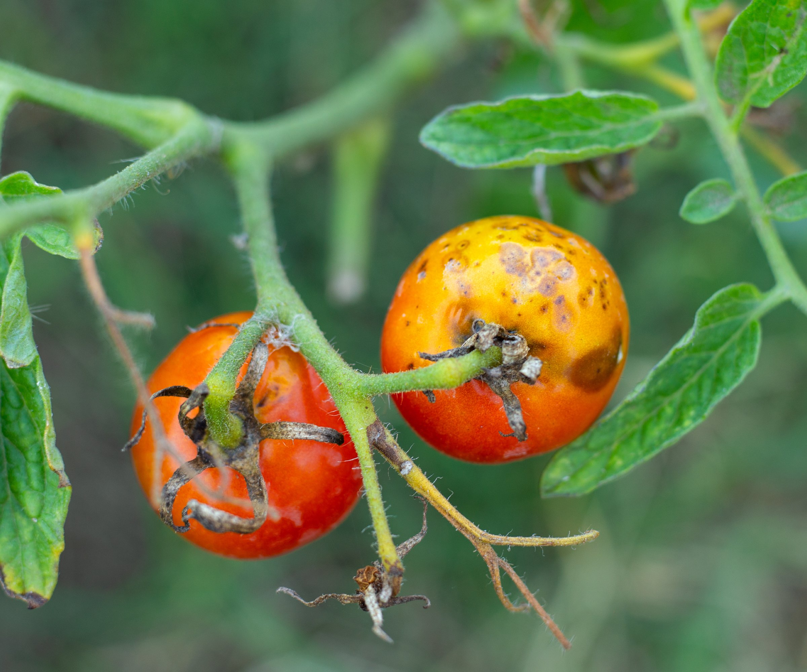
Tomato Yellow Leaf Curl Virus
TYLCV
Symptoms:
- Yellowing and curling of leaves
- Stunted plant growth
- Reduced fruit set
- Small, poor-quality fruits
Transmission:
Transmitted by whiteflies (Bemisia tabaci). No cure once infected.
Management:
Cucumber Downy Mildew
Pseudoperonospora cubensis
Symptoms:
- Yellow spots on upper leaf surface
- Fuzzy gray growth on leaf undersides
- Rapid leaf death and defoliation
- Significant yield reduction
Favorable Conditions:
Cool, humid conditions with temperatures 15-22°C and high relative humidity.
Management:
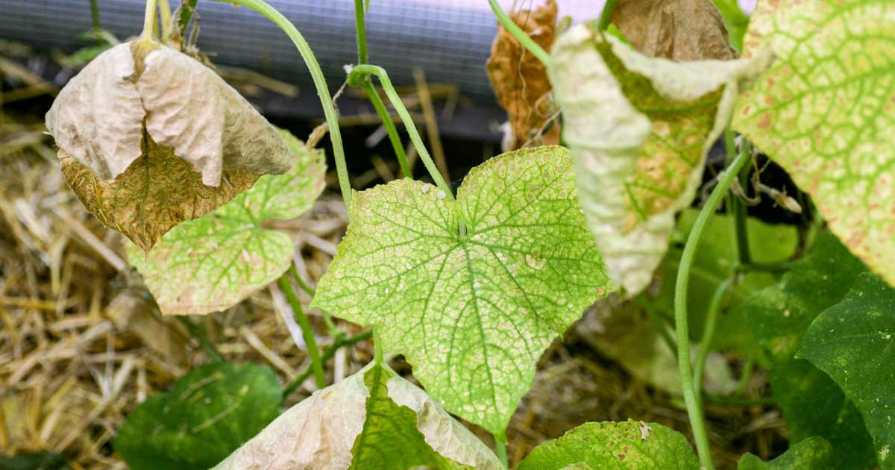
Bacterial Wilt
Ralstonia solanacearum
Symptoms:
- Sudden wilting of plants
- Brown discoloration of vascular tissue
- Bacterial ooze from cut stems
- Rapid plant death
Host Range:
Affects tomatoes, potatoes, eggplants, peppers, and other solanaceous crops.
Management:
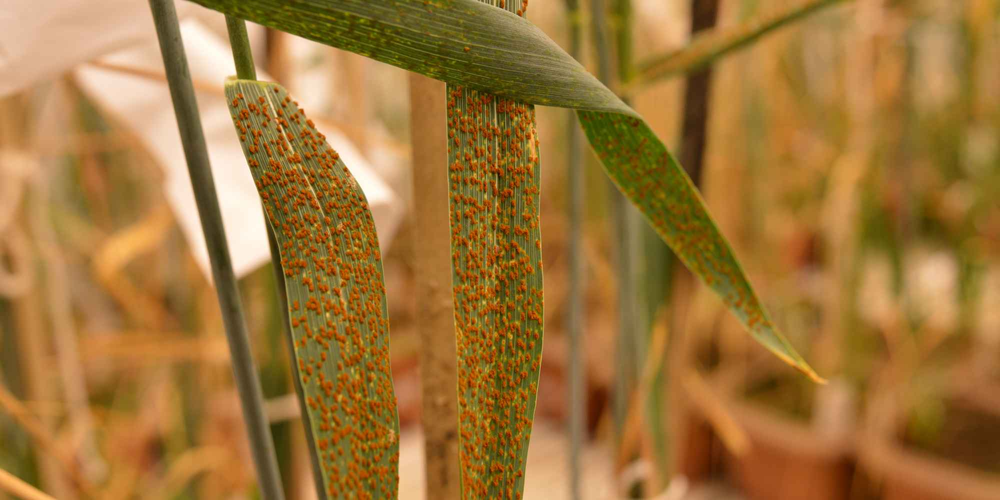
Wheat Stripe Rust
Puccinia striiformis
Symptoms:
- Yellow stripe patterns on leaves
- Orange-yellow pustules
- Premature leaf death
- Shriveled grain
Yield Impact:
Can cause 10-70% yield losses depending on infection timing and severity.
Management:
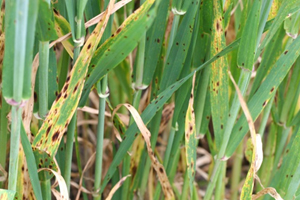
Barley Net Blotch
Pyrenophora teres
Symptoms:
- Net-like pattern on leaves
- Brown elongated lesions
- Reduced tillering
- Poor grain quality
Disease Development:
Favored by moderate temperatures (20-25°C) and high humidity.
Management:
Integrated Disease Management
Cultural Control
- Crop rotation to break disease cycles
- Field sanitation and debris removal
- Optimal planting dates
- Proper irrigation management
- Adequate plant spacing for air circulation
Biological Control
- Beneficial microorganisms
- Biocontrol agents
- Compost and organic matter
- Natural predator conservation
- Microbial antagonists
Chemical Control
- Targeted fungicide applications
- Resistance management strategies
- Optimal application timing
- Systemic and contact fungicides
- Proper spray coverage
Genetic Resistance
- Disease-resistant cultivars
- Plant breeding programs
- Gene pyramiding strategies
- Marker-assisted selection
- Variety diversification
Climate Change and Disease Pressure
Observed Trends:
- Rising temperatures altering disease cycles
- Changing rainfall patterns affecting disease pressure
- More frequent extreme weather events
- Pest and pathogen range expansion
Adaptation Strategies:
- Early warning systems
- Climate-resilient varieties
- Precision agriculture technologies
- Integrated pest and disease monitoring